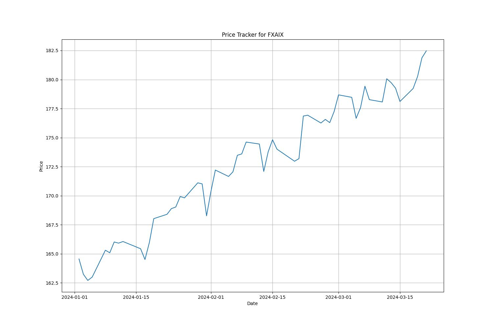
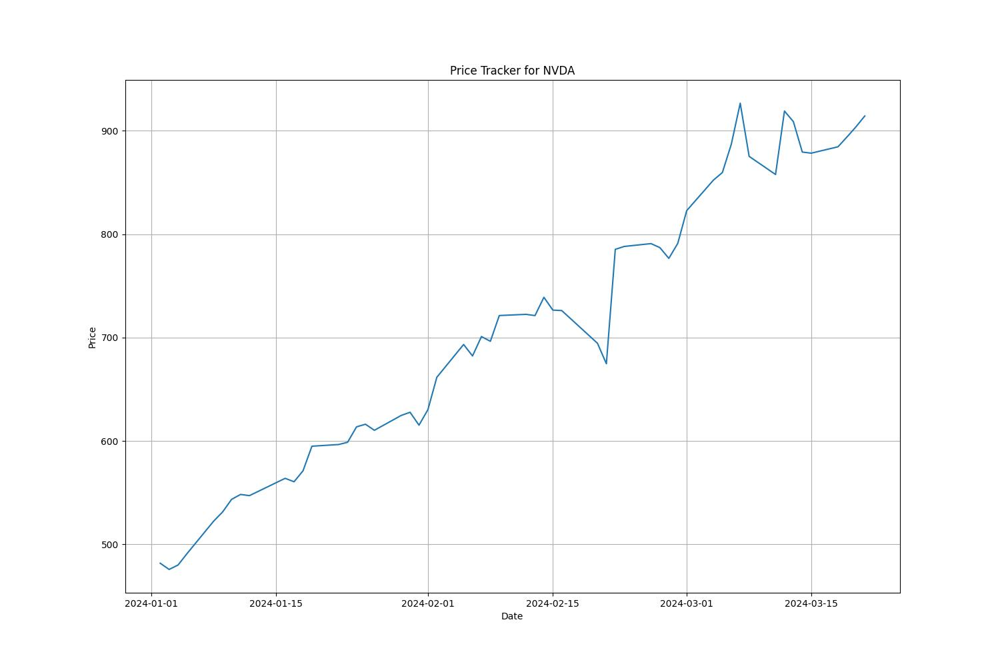
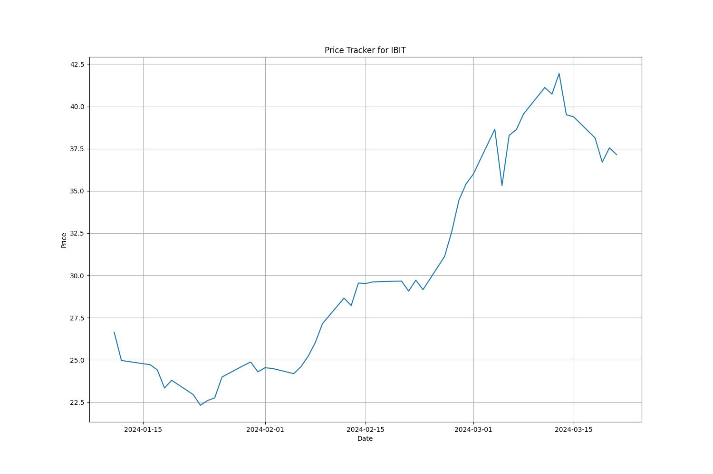

Ticker data for FXAIX (2008-2024):
The fund normally invests at least 80% of assets in common stocks included in the S&P 500 Index, which broadly represents the performance of common stocks publicly traded in the United States. It lends securities to earn income.

Previous Close: 181.87
Fifty Day Average: 173.4534
Time Zone: America/New_York
Ticker data for NVDA (2008-2024):
NVIDIA Corporation provides graphics, and compute and networking solutions in the United States, Taiwan, China, Hong Kong, and internationally. The Graphics segment offers GeForce GPUs for gaming and PCs, the GeForce NOW game streaming service and related infrastructure, and solutions for gaming platforms; Quadro/NVIDIA RTX GPUs for enterprise workstation graphics; virtual GPU or vGPU software for cloud-based visual and virtual computing; automotive platforms for infotainment systems; and Omniverse software for building and operating metaverse and 3D internet applications. The Compute & Networking segment comprises Data Center computing platforms and end-to-end networking platforms, including Quantum for InfiniBand and Spectrum for Ethernet; NVIDIA DRIVE automated-driving platform and automotive development agreements; Jetson robotics and other embedded platforms; NVIDIA AI Enterprise and other software; and DGX Cloud software and services. The company's products are used in gaming, professional visualization, data center, and automotive markets. It sells its products to original equipment manufacturers, original device manufacturers, system integrators and distributors, independent software vendors, cloud service providers, consumer internet companies, add-in board manufacturers, distributors, automotive manufacturers and tier-1 automotive suppliers, and other ecosystem participants. NVIDIA Corporation was incorporated in 1993 and is headquartered in Santa Clara, California.

Previous Close: 903.72
Fifty Day Average: 724.465
Time Zone: America/New_York
Ticker data for IBIT (2008-2024):
The shares are intended to constitute a simple means of making an investment similar to an investment in bitcoin rather than by acquiring, holding and trading bitcoin directly on a peer-to-peer or other basis or via a digital asset exchange.

Previous Close: 37.55
Fifty Day Average: 30.226458
Time Zone: America/New_York